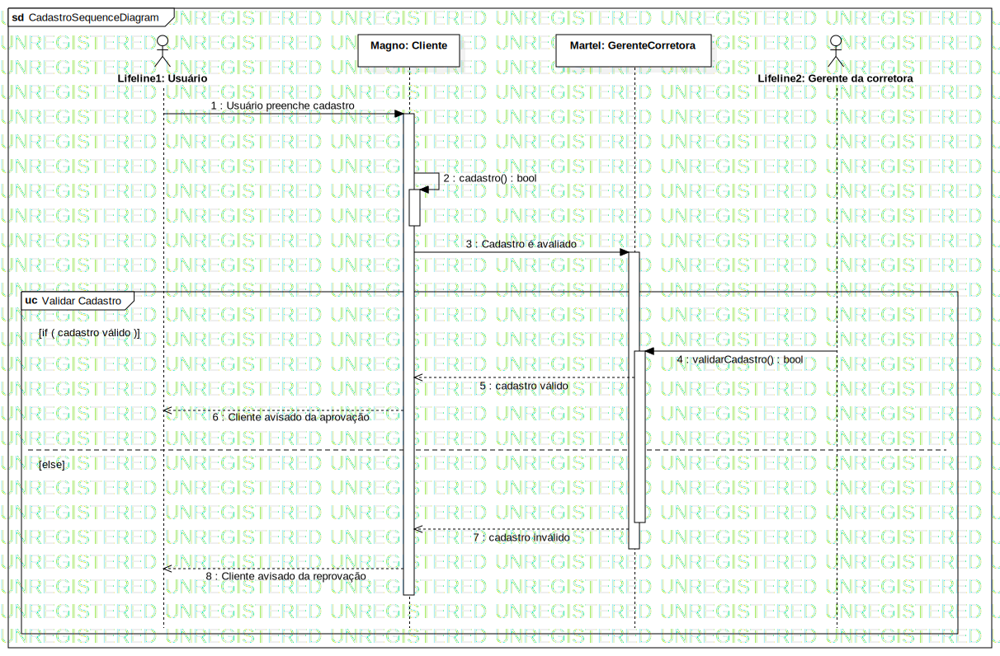

Interaction1
UMLInteraction
Untitled
::
Model
::
Cadastro
::
Interaction1
Description
none
Diagrams

CadastroSequenceDiagram
Participants
Lifeline1: Usuário
Lifeline2: Gerente da corretora
Magno: Cliente
Martel: GerenteCorretora
Messages
Usuário preenche cadastro (Lifeline1→Magno)
cadastro() : bool (Magno→Magno)
Cadastro é avaliado (Magno→Martel)
validarCadastro() : bool (Lifeline2→Martel)
cadastro válido (Martel→Magno)
Cliente avisado da aprovação (Magno→Lifeline1)
cadastro inválido (Martel→Magno)
Cliente avisado da reprovação (Magno→Lifeline1)
Properties
Name
Value
name
Interaction1
stereotype
null
visibility
public
isReentrant
true
Owned Elements
CadastroSequenceDiagram